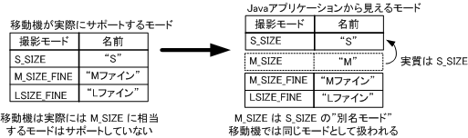

|
||||||||
| フレームあり フレームなし | ||||||||
| 概要: 内部クラス | フィールド | コンストラクタ | メソッド | 詳細: フィールド | コンストラクタ | メソッド | |||||||
java.lang.Object
|
+--com.kddi.io.CameraMode
|
+--com.kddi.io.MovieMode
ムービーの撮影モードを表現するクラスです。
移動機システムによって、同一のモードでも内容が異なる場合があるので注意して下さい。 ただし、各モードに対するインスタンスは唯一です。そのため、 equals() の比較結果と == による比較結果が等価になることが保証されています。
このクラスで定義している S_SIZE、M_SIZE、
M_SIZE_FINE、L_SIZE_FINE 以外にも、
移動機システムによっては独自のムービー撮影モードがあります。
MovieConnection インタフェースの getAllModes() メソッドでこれら全ての撮影モードを取得することができます。
取得した MovieMode の配列には、S_SIZE、M_SIZE、
M_SIZE_FINE、L_SIZE_FINE も含まれます。
移動機システムのムービーの撮影モードが 4 未満の場合は、
このクラスで定義している撮影モード（S_SIZE など）において、
サポートされていない撮影モードが、サポートされている他の撮影モードの別名のモードになります。
別名の撮影モードは、
toString() で取得するモード名は異なりますが、
getHeight()、getWidth() で取得する画像サイズ、
getQuality() で取得する画質は同じです。
このような場合に、実際に撮影したモードを取得すると、 設定したモードとは異なるモード（ただし実質は同じである別名モード）になることがあります。
図 1 に、実際には M_SIZE モードをサポートしていない移動機の例を示します。

図1. 移動機が 3 つのモードしかサポートしていない例
この例のような場合では、
Java アプリケーションが setMode() によって M_SIZE を指定しても、
capture() で撮影した結果を保持する
MovieContent オブジェクトの getMode()
が S_SIZE を返すことがあります。
MovieConnection,
MovieContent| フィールドの概要 | |
static MovieMode |
L_SIZE_FINE
Lサイズ・ファイン（メール用）を表します。 |
static MovieMode |
M_SIZE
Mサイズ（メール用）を表します。 |
static MovieMode |
M_SIZE_FINE
Mサイズ・ファイン（メール用）を表します。 |
static MovieMode |
S_SIZE
Sサイズ（メール用）を表します。 |
| メソッドの概要 | |
int |
getQuality()
撮影するムービーの画質を返します。 |
| クラス com.kddi.io.CameraMode から継承したメソッド |
getHeight, getWidth, toString |
| クラス java.lang.Object から継承したメソッド |
equals, getClass, hashCode, notify, notifyAll, wait, wait, wait |
| フィールドの詳細 |
public static final MovieMode S_SIZE
public static final MovieMode M_SIZE
public static final MovieMode M_SIZE_FINE
public static final MovieMode L_SIZE_FINE
| メソッドの詳細 |
public int getQuality()
|
||||||||
| フレームあり フレームなし | ||||||||
| 概要: 内部クラス | フィールド | コンストラクタ | メソッド | 詳細: フィールド | コンストラクタ | メソッド | |||||||